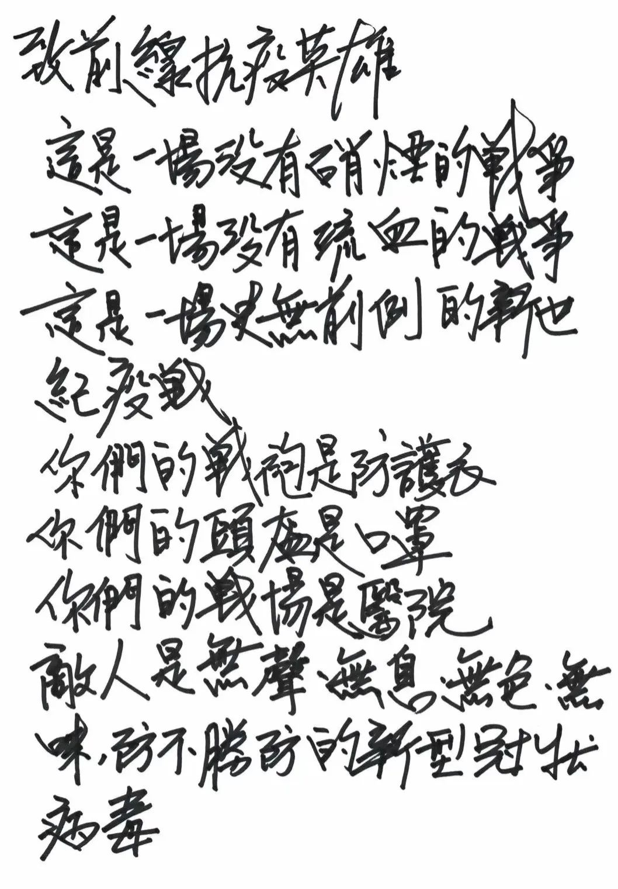
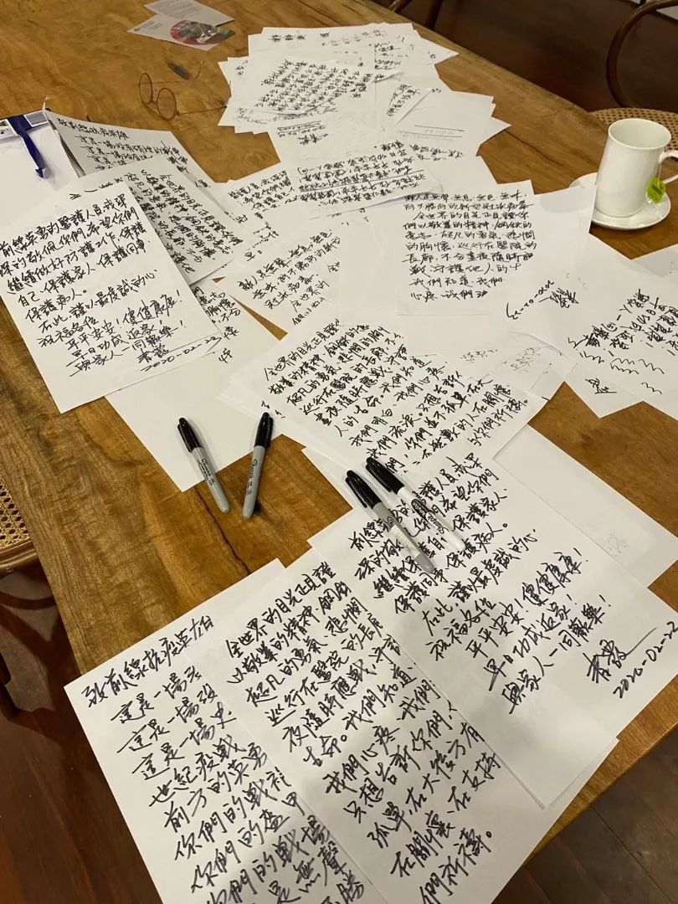

这个6岁上海小囡，用画笔成为战疫后方“小记者”！
原文链接 备份链接 小舅婆在战“疫”前线战斗，有有做了战地后方的“小记者”。画画内容的变化也悄然诉说着疫情的变化。 编者按 当很多小朋友把寒假过得快腻味的时候，有个叫有有的小朋友，却找到了一件有趣的持之以恒的事情——画抗疫漫画。 有有，大 …

林青霞发心起愿，为抗击疫情尽自己的努力——要给最有需要的人送去最及时、最有用的物资，并将这份关爱送到祖国大陆和台港澳同胞们的手中。
文 | 王悦阳



近日，林青霞的一封亲笔信，感动了无数人。
作为中国华语影坛最具传奇色彩的演员，林青霞有过许多经典作品，诸如《窗外》《我是一片云》《金玉良缘红楼梦》《新蜀山剑侠传》《滚滚红尘》等，影响深远，粉丝众多。尤其林青霞的美更是不可方物，因而被喜爱她的粉丝称为“东南亚第一美人”，作家琼瑶曾经这样评价过林青霞:“从来没遇到过第二个可以跟青霞媲美的女子，林青霞不光外表非常的美丽，而且也是一个心地善良的女人。”
此次亲笔写下致前线抗疫英雄的这封信，是林青霞近日来的所思所想，她希望通过自己的文字，传递一份信心，一个支持，一股力量给到所有奋战在前线的抗疫英雄，让他们知道，他们在前线并不是孤军作战，大家都是在他们身后，为他们加油打气。

近一个月来，身在香港的林青霞始终关心着全国各地疫情的发展动向，最美逆行者的义无反顾，广大医务人员的尽心尽力，越来越多的病人走向康复……每一件事都牵动着她的心。在与金圣华、贾安宜、辛丹妮等香港、大陆、台湾的三位朋友们交流的过程中，林青霞发心起愿，为抗击疫情尽自己的努力——要给最有需要的人送去最及时、最有用的物资，并将这份关爱送到祖国大陆和台港澳同胞们的手中。
恰在此时，一位朋友向林青霞传来一张照片，图中，一名申请到武汉支援前线的医护人员，在防护衣后面写上“我爱林青霞”，显然她是青霞的忠实粉丝，上战场的时候，不忘让偶像“陪伴”自己。一张小小的照片，传递出的感动与温情，令林青霞为之动容不已，或许，自己的一句话，一份祝福，就能为抗疫第一线的工作者带来无穷鼓励与信心。于是，夜深人静之际，林青霞开始动笔写下心中的话，为医务工作者的勇气与爱心点赞，加油——
致前线的抗疫英雄：这是一场没有硝烟的战争，这是一场没有流血的战争，这是一场史无前例的新世纪疫战。你们的战袍是防弹衣，你们的头盔是口罩，你们的战场是医院。敌人是无声无息，无色无味，防不胜防的新型冠状病毒，全世界的目光正见证你们以敬业的精神、钢铁的意志、超凡的勇气、悲悯的胸怀，巡行在医院的长廊，不分昼夜，随时应战守护他人的生命。我们知道，我们明白，我们心疼，我们流泪。只想告诉你们，你们并不孤单，在大后方，有无数的人在关怀，在支持，在为你们祈祷。
前线英勇的医护人员，我深深地敬佩你们，希望你们继续做好防护工作，保护自己，保护家人，保护同事，保护病人。
在此，谨以最虔诚的心祝福各位
平平安安！健健康康！早日功成返家，与家人团聚！
青霞，2020年2月23日
一封书信，纸短情长。爽朗大气的字迹，真诚细腻的情感，朴实生动的语言，透露出林青霞最真挚的情感、关怀与祝福。写完这封信，已是第二天的凌晨，林青霞用邮件传给了身边的好友们，不久就得到了大家热烈的响应与反馈。著名导演赖声川看到后，将信的全文通过媒体公之于众，一时间，传播迅速，反响热烈，大家不仅赞美林青霞“人美字美”，更感动于她的一颗大爱之心。
事实上，书信只是开始。在林青霞的感召下，上海的闺蜜好友贾安宜，以及大成律师事务所的张一君律师与林沙女士、王熠星先生等一起，建立了“好友群”，并已通过正规渠道筹集医疗物资，不日即将送达武汉抗疫第一线。之后还会有更多批的物资，会陆续送到祖国大陆和台港澳的同胞手中。
在这批林青霞与朋友们捐赠的医疗物资上，每一个箱子上都有一幅画，那是上海的书法家王宇鸣先生的创作——一颗红红的爱心，底部仿佛一根连接内地与香港的爱心丝带，整幅画面的造型则更像一只翩翩起舞的蝴蝶。林青霞笑着说道：“这叫开心，希望疫情尽快过去，每个家庭都开开心心！”朴素的语言却有深刻的寓意。值得一提的是，每一个箱子里，都有林青霞亲笔写的这封信，以此表达自己最由衷的祝福与心情。为了医务工作者能收到这封信，林青霞这几天认认真真地抄写了十个多小时，写干了四支笔。一笔一画，一丝不苟，都可谓饱含深情。

“这是我义无反顾要去做的一件事，我感到很高兴。衷心感佩医务工作者们的努力与付出，敬祝平安！”林青霞由衷地说道。

征集令
《新民周刊》现面向全国征集新冠肺炎采访对象和真实故事：
如果你是参与抗击新冠肺炎疫情的医护人员或其家属，我们希望聆听你的“战疫”故事，也希望传达你的诉求。
如果你是确诊、疑似患者本人或家属，我们希望了解你和家人如何“抗疫”的过程，让外界了解你的真实经历。
如果你是疫情严重地区的普通市民，我们希望展现你的乐观，并倾听你所需的帮助。
如果你是公共服务人员或各类捐助者，我们希望看到你的“最美逆行”，记录下你的无私。
……
抗击新冠肺炎疫情，我们诚征对疫情了解的社会各界人士，提供相关线索，说出你的故事，让我们用新闻留存这一切。
《新民周刊》新冠肺炎线索征集值班编辑联系方式（添加时请简要自我介绍）：
周一：应 琛 微信号：paulineying0127
周二：金 姬 微信号：gepetta
周三：黄 祺 微信号：shewen-2020
周四：周 洁 微信号：asyouasyou
周五：孔冰欣 微信号：kbx875055141
周六：吴 雪 微信号：shyshine1105
周日：姜浩峰 微信号：jianggeladandong
✳如你需要捐赠物资，可与以下两位工作人员联系:王勇：WangYong-SH 吴轶君：rommy150708（添加时请注明“捐物资”，方便工作人员快速通过您的申请，谢谢。）
新闻是历史的底稿，你们是历史的见证者。期待你的故事、你的线索！

▼
大家还都在看这些
▼
新民周刊所有平台稿件， 未经正式授权
一律不得转载、出版、改编或进行
与新民周刊版权相关的其他行为，违者必究


原文链接 备份链接 小舅婆在战“疫”前线战斗，有有做了战地后方的“小记者”。画画内容的变化也悄然诉说着疫情的变化。 编者按 当很多小朋友把寒假过得快腻味的时候，有个叫有有的小朋友，却找到了一件有趣的持之以恒的事情——画抗疫漫画。 有有，大 …
原文链接 备份链接 做公益，只凭“鸡血”“热情”，这是不行的。 口述 | 周健（北京感恩公益基金会理事长） 整理 | 王煜 这些天以来，许多事情让我非常揪心。 湖南衡山县的乡镇医生宋英杰，连续十几天在抗疫岗位上工作，过劳去世，因公殉职时 …
原文链接 备份链接 编者按：新冠病毒封住了大家的脚步，闷在家里做贡献，成了上海人的日常；而有那么一群人，却每天都要走街串巷，越是容易传播病毒的地方，越是普通人避之唯恐不及的地方，越要往里冲——陶贵永就是其中之一，他们是城市里的“逆行 …
原文链接 备份链接 应该做一个自私的人，还是坚持自己：做一个对社会有用的人？ 口述 | 高 集 整理 | 沈 林 今天是我自愿隔离在家的第14天，按理说，我已经可以正常出门了。但是最近发生的事，让我的心情很复杂。 我叫高集，20多岁的时 …
原文链接 备份链接 👆本号引起极度舒适，建议星标一下 在疫情爆发之时，市场技术与效率优势填补了行政力量难以触达的盲点，行政力量随后成为了大局指挥的关键要素。但在新的阶段，当市场中各类经济体本身有了更多的常态化需求时，行政力量帮扶政策与一刀 …